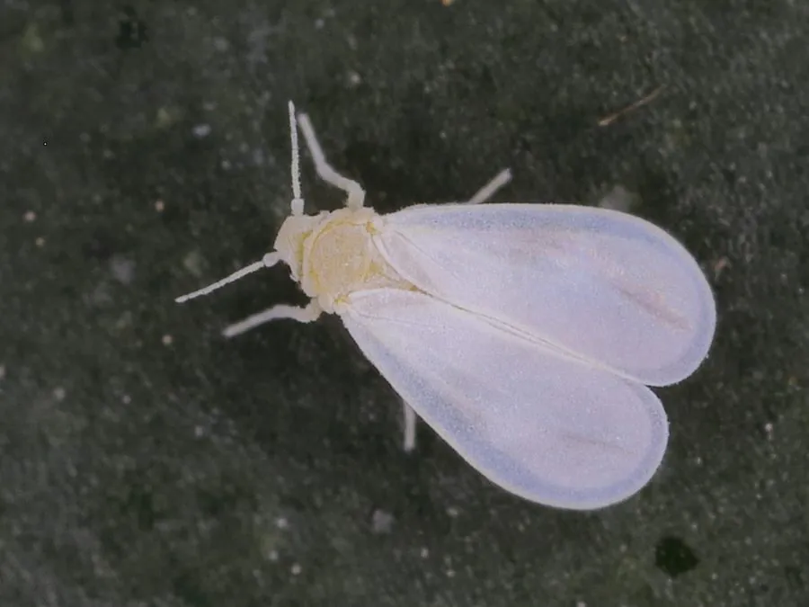

昆虫 · 动物界
温室白粉虱 Trialeurodes vaporariorum

全球温室和菜地常见的微小害虫，成虫体表覆白色蜡粉，群集在叶片背面吸食汁液，还会引发煤污病。
- 分类
- 门节肢动物门纲昆虫纲目半翅目科粉虱科属白粉虱属
- 栖息环境
- 温室、大棚、菜地、花园与花卉种植区
- 地理分布
- 全球分布，中国各地温室和菜地常见
- 保护级别
- IUCN 暂无评估；中国常见农业害虫，无保护级别
物种志
温室白粉虱成虫体长仅 1–1.5 毫米，身体淡黄色，翅和体表覆盖白色蜡粉，停息时像一只白色小蛾；卵呈椭圆形，幼虫扁平、固定于叶片背面吸食汁液，老熟若虫在叶背形成淡绿色或白色的扁圆形蛹壳。
它几乎遍布全球的温室、大棚和露地菜地，寄主植物超过 200 种，包括番茄、黄瓜、茄子、豆类和花卉。成虫和若虫群集在叶片背面刺吸汁液，造成叶片褪绿、卷曲，同时分泌蜜露污染叶片和果实，诱发煤污病，影响光合作用。它一年可发生多代，在温室中可终年繁殖，雌虫产卵 100–200 枚。防治上应加强通风、黄板诱杀、释放丽蚜小蜂等天敌，并轮换使用药剂以避免抗药性，它对人体没有直接危害。
形态与习性
- 食性成虫和若虫吸食植物叶片汁液
- 体长成虫 1–1.5 mm
- 寿命一代约 2–4 周，温室中终年繁殖
- 繁殖卵生，雌虫产卵 100–200 枚
- 活动节律成虫白天活跃，多在叶背活动
- 危害吸食汁液并分泌蜜露，引发煤污病
趣味知识
- 温室白粉虱成虫体表覆有白色蜡粉，停息时像一只小小的白蛾。
- 它分泌的蜜露会污染叶片和果实，诱发黑色的煤污病。
- 黄板诱杀和释放丽蚜小蜂，是温室中防治白粉虱的常用方法。